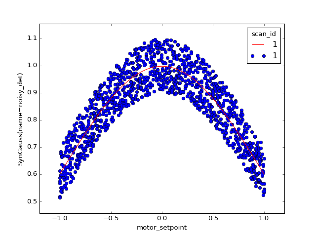

Re-scan until fit achieves desired confidence¶
import matplotlib.pyplot as plt
import numpy as np
import lmfit
from bluesky.plans import (subs_decorator, abs_set, trigger_and_read,
run_decorator, stage_decorator)
from bluesky.callbacks import LiveFit, LiveFitPlot, LivePlot
from bluesky.examples import motor, noisy_det
def errorbar(lmfit_result, param_name):
# width of 95% conf interfal:
ci = lmfit_result.conf_interval()
return ci[param_name][-2][1] - ci[param_name][1][1]
def gaussian(x, A, sigma, x0):
return A * np.exp(-(x - x0)**2 / (2 * sigma**2))
model = lmfit.Model(gaussian)
guess = {'A': 10,
'x0': 1,
'sigma': lmfit.Parameter('sigma', 3, min=0)}
def scan_gaussian(detectors, motor, start, stop, num):
global lf
main_detector = detectors[0]
main_motor_field, *_ = motor.describe()
lf = LiveFit(model, main_detector.name, {'x': main_motor_field}, guess)
lfp = LiveFitPlot(lf, color='r', ax=plt.gca())
lp = LivePlot(main_detector, main_motor_field,
linestyle='none', marker='o', ax=plt.gca())
@subs_decorator([lfp, lp])
@stage_decorator(list(detectors) + [motor])
@run_decorator()
def plan():
while True:
for step in np.linspace(start, stop, num):
yield from abs_set(motor, step, wait=True)
yield from trigger_and_read(list(detectors) + [motor])
err = errorbar(lf.result, 'sigma')
if err < .03:
break
yield from plan()
# Example usage:
RE(scan_gaussian([noisy_det], motor, -1, 1, 200))
